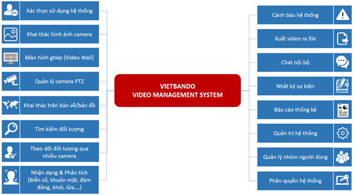

Vietbando Video Management System (VVMS) là Hệ thống quản lý camera, giám sát video dựa trên TCP/IP, hỗ trợ kết nối không giới hạn số lượng IP camera.
Hệ thống được thiết kế để phân tích, xử lý, lưu trữ và hiển thị dữ liệu video một cách thông minh, khả năng phân tích video mạnh mẽ, tối ưu hóa và hỗ trợ xử lý công việc.
Giao diện hệ thống thân thiện, giúp người dùng dễ dàng kết nối các camera, dễ dàng cài đặt, cấu hình và quản lý trong các công việc hàng ngày.

Bao gồm các chức năng đăng nhập/đăng xuất hệ thống và xác thực các quyền của người dùng trên hệ thống được thực hiện đã được quản trị phân để hiển thị các chức năng tương ứng.
Bao gồm các chức năng xem hình ảnh các camera, xem đồng thời nhiều camera, chọn camera xem, phát lại video thời gian bất kỳ, tùy chỉnh chế độ/tốc độ xem video, điều chỉnh âm lượng, đánh dấu các khung hình (frame) trong video, lưu khung hình...
Bao gồm các chức năng hiển thị video trên màn hình ghép, thiết lập màn hình ghép, thiết lập số màn hình, vị trí…
Bao gồm các chức năng quản lý camera PTZ, quản lý chuyển động của camera theo các hướng khác nhau, phóng to/thu nhỏ, điều khiển lấy nét (+ / - / AF), hồng ngoại…
Bao gồm các chức năng hiển thị chồng vị trí/ảnh camera trên bản vẽ/bản đồ.
Bao gồm các chức năng tìm kiếm đối tượng trong kho lưu trữ video theo các tham số (bộ lọc) khác nhau: khu vực (region) trong khung hình (frame), kích thước/tỷ lệ đối tượng, khuôn mặt, mẫu, phương tiện…
Bao gồm các chức năng cho phép theo dõi chuyển động liên tục của một người đi qua các camera khác nhau của hệ thống giám sát video.
Bao gồm các chức năng phân tích nhận dạng biển số, khuôn mặt, đám đông, khói, lửa…
Bao gồm các chức năng cảnh báo phản ứng với các sự kiện nhất định, thiết lập loại cảnh báo, hình thức cảnh báo…
Bao gồm các chức năng xuất video từ kho lưu trữ video ra file với các định dạng khác nhau: AVI, MP4…
Bao gồm các chức năng trao đổi tin nhắn giữa những người dùng trong hệ thống.
Bao gồm các chức năng về toàn bộ sự kiện hệ thống và của người dùng.
Bao gồm các chức năng báo cáo về đối tượng theo dõi, các loại cảnh báo, kho lưu trữ video, nhận dạng khuôn mặt/biển số, thời gian làm việc nhân viên, đếm số người, đám đông, bản đồ nhiệt (heat map)…
Bao gồm các chức năng về quản lý nhóm người dùng trong hệ thống.
Bao gồm các chức năng phân quyền sử dụng các chức năng của hệ thống cho người dùng.
Bao gồm các chức năng quản trị các thiết lập của hệ thống.